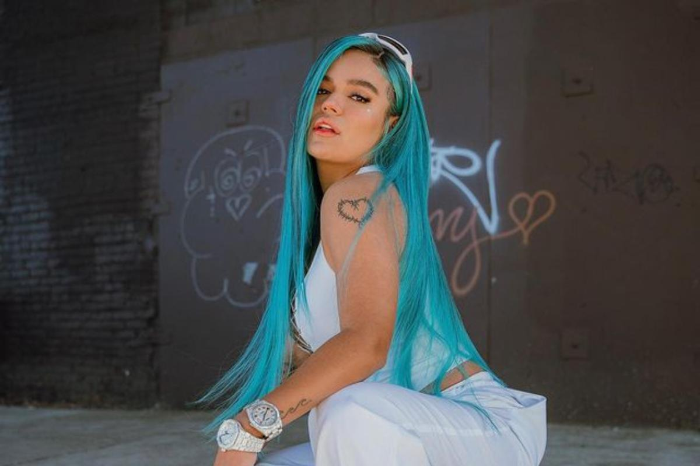

ARTITAS
KAROL G

BIOGRAFIA
Carolina Giraldo Navarro nació el 14 de febrero de 1991 en Medellín, Colombia, su padre es músico. Desde temprana edad tuvo interés por la música. Estudió en el colegio Calasanz Femenino
En 2006 participó en el reality show Factor X, y vio en él una oportunidad de surgir en el mundo de la música.
Gracias a su participación obtuvo su primer contrato discográfico con Flamingo Records (Colombia) & Diamond Music (Puerto Rico) y eligió Karol G como su nombre artístico.
En su primer año fue invitada por DJ Kio a ser telonera de los conciertos de Don Omar en la ciudad de Cartagena.
En una ocasión J Balvin se presentó en la fiesta de quince años de una prima suya, y cantó una canción con él.
Estudió música en la Universidad de Antioquia,1 y mercadotecnia en Nueva York durante tres meses
CARRERA MUSICAL
2007-2014: Inicios
Lanzó su primer sencillo en 2007 llamado «En la playa» bajo el sello Diamond Music, el cual tuvo un video musical.18 Fue invitada por DJ Kio a abrir los conciertos de Daddy Yankee en su gira por Colombia, el cual se dio durante finales de 2007.19 En 2008, lanzaría su segundo sencillo titulado «Por ti» con un video musical acompañado.20 Durante 2009, lanzó más sencillos como «Dime que si», «Así es el amor» y «Me ilusioné», pero sin éxito alguno.21
Lanzó la canción «Mil maneras» junto a Alexander DJ en 2010 y empezó a trabajar como corista para Reykon y posteriormente lanzaron dos temas en conjunto, uno de ellos fue «Tu juguete» que se lanzó en 2011, y en 2012 realizó el sencillo «301» junto con él, ganando gran notoriedad internacional con este último.22 Renunció a trabajar con él para enfocarse en su proyecto como solista.
En 2013, logró mayor notoriedad con «Bajo control» y «Amor de dos», este último con el artista Nicky Jam.23 En 2014, lanzó los sencillos «Ricos besos» y «Mañana», este último con colaboración de Andy Rivera.24
2015-2017: Unstoppable
2015-2017: Unstoppable
Al año siguiente, lanzó una nueva versión de la canción «Mil horas» de Los Abuelos de la Nada llamada «Ya no te creo».25 «Ricos besos» y «Ya no te creo» alcanzaron el top en Colombia, y fue entonces cuando la discográfica Universal Latin firmó con ella en diciembre de 2015, tras ello lanzó el sencillo «Casi nada» en Estados Unidos,26 y recibió una nominación a los Premios Heat Latin Music Awards de 2016.27
Durante 2016, obtuvo mayor reconocimiento musical, y lanzó diferentes sencillos. El sencillo «Casi nada» alcanzó el puesto 33 de Hot Latin Songs, y su sencillo «Hello» con Ozuna el puesto 39.28 En «Hello», ella mostró un lado más atrevido, y comentó que «cuenta con un toque extra de sensualidad».29 También tuvo colaboraciones con Sebastián Yatra en «Lo que siento por ti»30 y Daddy Yankee en «Código de amor».31
Anunció el nombre de su álbum debut Unstoppable en un concierto de J Balvin en Argentina en octubre de 2017.32 El lanzamiento ocurrió el 27 de octubre de 2017. El disco contuvo mezclas de reguetón y trap con melodías de pop, y trató sobre la realidad de la mujer y la juventud.33 El álbum contó con colaboraciones con Cosculluela, Ozuna, Bad Bunny y Kevin Roldán. La producción la llevó a cabo Ovy On The Drums y la mezcla Mosty y Jaycen.10 Obtuvo el puesto dos del Top Latin Albums, y se convirtió en el álbum debut de una mujer más alto en las listas en dos años, desde Chiquis Rivera en 2015 con Ahora.34 Según ella, la realización del álbum duró cuatro años.35 El disco contó con 7 sencillos entre ellos, «Casi nada», «Hello», «A ella» y «Ahora me llama», este último junto al cantante Bad Bunny.36 Debutó en el puesto 192 de la lista Billboard 20037 y en el puesto dos de Top Latin Albums38 y Latin Rhythm Albums, con 3000 copias vendidas en su primera semana.39
El álbum recibió una nominación a los premios Billboard de la música latina del 2018 en la categoría Top Latin Albums Artista del Año, Femenina.40 Thom Jurek de Allmusic
calificó a Unstoppable como «la primera entrada sólida de una mujer en el movimiento del trap latino».